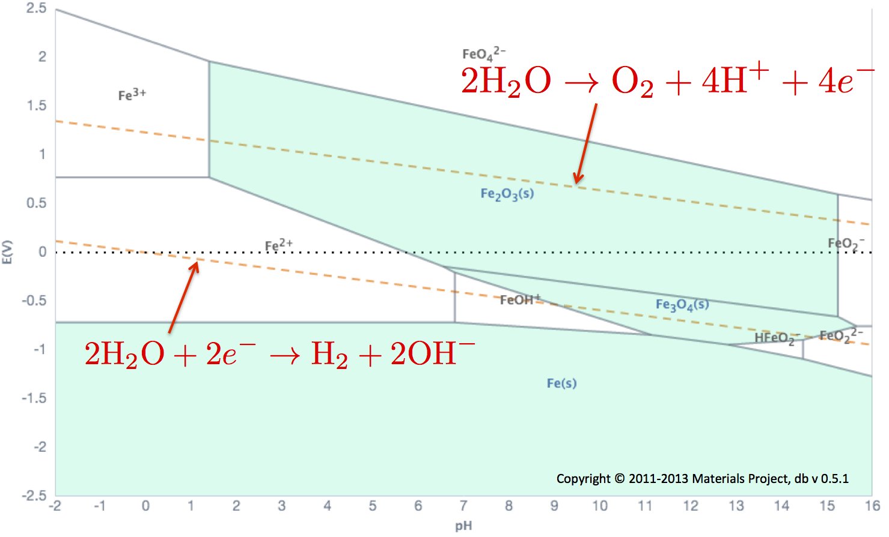

Pourbaix App¶
Introduction¶
A Pourbaix diagram, also frequently called a potenial-pH diagram, or E-pH diagram, is a representation of aqueous phase electrochemical equilibria. It is a two-dimensional representation of a three-dimensional free energy-pH-potential diagram. In other words, it shows water-stable phases as a function of pH and potential, where, potential is defined with respect to the standard hydrogen electrode.
Experimentally determining Pourbaix Diagrams is painstaking work, as we need not only the free energy of aqueous ions, but also that of all solid phases that a system can exist in. The Materials Project offers a very convenient and powerful database of materials properties which has been used to generate Pourbaix diagrams in a high-throughput manner.
This manual outlines the usage of the Pourbaix App to calculate Pourbaix diagrams, and the thermodynamic formalism underlying the app.
Thermodynamic Formalism of Pourbaix Diagrams¶
To calculate a Pourbaix diagram, free energies of the solid phases, and of the aqueous ions is required. Calculating free energies of ions is tricky, and time-consuming. To overcome this problem, a methodology utilizing experimentally measured free energies of aqueous ions and the calculated DFT energies for solid phases available in the Materials Project was developed. 1 Note that the correction scheme described below is applied over and above any compatibilities/corrections which are applied to the species.
Referencing Energies of Aqueous Ions¶
Briefly, for each ion, a reference solid is chosen, and the correction term is calculated for the ion as the energy difference between the experimental and the DFT calculated energies of the reference solid. The basic idea behind this scheme is that, if we have a reference energy for an aqueous ion which reproduces the correct dissolution for one solid, then accurate DFT solid-solid energy differences ensure that all other solids dissolve accurately with respect to that ion. The better the solid is represented by DFT, the more transferable the reference aqueous energy becomes. We therefore prefer to choose simple chemical systems (primarily binaries with an uncomplicated electronic structure) as representative solids.
For an aqueous ion i at standard state conditions (e.g., room temperature, atmospheric pressure, and \(10^{-6}\) M concentration) using a representative solid s, we define the chemical potential as:
 Figure 1: Schematic to reference experimental aqueous ion energies to DFT data
Figure 1: Schematic to reference experimental aqueous ion energies to DFT data
Figure 1 shows this schematically.
Correction for Water¶
In an aqueous environment, many chemical and electrochemical reactions are enabled by the breakdown, formation, or incorporation of water molecules. It is therefore important that the free energy of formation of water is captured accurately. This is known accurately from experiments as \(-2.46~eV\). So, at standard state, the free energy of formation of water is set as follows:
Correction for Elemental Gaseous, and Liquid States, except \(\ce{H2}\)¶
For all gaseous elements, the experimentally determined entropic contribution at 298 K is added to the DFT/corrected energy of the element as follows:
This is implemented for the following elements: \(\ce{O_2, F_2, Cl_2, Br_2, Hg}\)
Correction for \(\ce{H_2}\)¶
In an aqueous environment, \(\ce{O_2}\) and \(\ce{H_2}\) in their gaseous states are in equilibrium with water through the reaction
\(\ce{H2(g) + 1/2O2(g) <-> H2O(l)}\)
Hence, the hydrogen energy is corrected such that the experimental free energy of formation of \(\ce{H_2O}\) is reproduced.
Electrochemical Stability of Metastable Materials¶
In principle, Pourbaix diagrams account for materials only at thermodynamic equilibrium, providing no insight into the electrochemical stability of metastable materials which find practical applications in many commercial applications. However, one can compute the Gibbs free energy difference for an arbitrary material with respect to the Pourbaix stable domains as a function of pH and E, providing an electrochemical (in)stability map for this material. For detailed information on the formalism and its applications see reference 2.2
Using the Computational Pourbaix App¶
The Pourbaix app is capable of plotting elemental, and multi-element Pourbaix diagrams. To construct an Elemental Pourbaix diagram, enter the element of choice, and click on the Generate button.
To generate a multi-elemental Pourbaix diagram, choose the desired multiple elements from the periodic table, and click the Generate button. Note that oxygen and hydrogen are included by default, since these elements are always "open" in a Pourbaix diagram.
For multi-elemental diagrams, sliders are provided to specify a composition of the elements. Note that for each composition, a new Pourbaix diagram is generated from scratch.
To generate electrochemical stability maps of a specific material go to the material's details page and click on the "Aqueous Stability (Pourbaix)" tab which can be found in the "Generate Phase Diagram" tab. A new tab will open which will show the electrochemical stability map superimposed on a Pourbaix diagram. The ratio of elements used to generate the Pourbaix diagram are same as that of the material in consideration. Electrochemical stability maps are available for materials with up to three non H and O elements. For materials with more than three elements, one can use pymatgen to generate the maps programmatically.
Interfacing With the Data¶
To ensure a clutter-free diagram, the domains on the Pourbaix diagram are not labeled by default. To view labels on the plot, select the "Domain Labels" check box. Each domain has a mouse-over point located at the center of the domain. Mousing over these points displays the entries corresponding to the domain. Domains which contain a solid in solution are shaded. This helps identify passivation regions, especially in multi-elemental systems, were identifying passivation regions is tricky. Zooming into domains is quite simple! Just drag a selection window using your mouse. To reset zoom, click on the reset zoom button which appears on the upper right corner. Data tables are shown to the right of the Pourbaix diagram. Mousing over rows in the "Stable" column of the table highlights the corresponding entries in the Pourbaix diagram. Some stable entries may not get highlighted. This is because the domains corresponding to these entries lies outside the standard limits of the Pourbaix diagram. The "Unstable" column in the table lists the unstable entries, and their corresponding energies above hull. Links in the data tables lead to more information about the corresponding entries. Unlinked entries are ions. Mousing over the book icon next to the ions shows the reference for the free energy of formation of the aqueous ion.
Demonstration of the Pourbaix App¶
This section briefly demonstrates an elemental Pourbaix diagram, a multi-elemental Pourbaix diagram, and an electrochemical stability map.
Elemental Pourbaix Diagram¶
Figure 2 shows the elemental Pourbaix diagram for Fe. The default concentration of ions is \(10^{-8}\) M, but can be varied using the "Concentration" slider above the diagram.
 Figure 2: Pourbaix diagram for elemental Fe.
Figure 2: Pourbaix diagram for elemental Fe.
The two orange lines are the hydrogen reduction line, and the line denoting water oxidation to \(\ce{O_2}\). These are clearly labeled in Figure 3. These lines show the stability region of H2O. For example, water is unstable below the \(\ce{H_2}\) line, and so, hydrogen gas evolves at the cathode at conditions below this line. Similarly, above the \(\ce{O_2}\) line, oxygen gas is evolved at the anode.
 Figure 3: Orange lines are the water oxidation and reduction lines in the Pourbaix diagram.
Multi-elemental Pourbaix diagram¶
The stability of multiple-elements in aqueous environments is predicted using multi-elemental Pourbaix diagrams like the one shown in Figure 4. The composition slider bar can be seen above the plot. Here, the small white bar separating the two colors can be clicked on and dragged to change the ratio of Fe to Cr. This may, or may not have any effect on the Pourbaix diagram. More information about how multi-elemental Pourbaix diagrams vary as a function of composition can be found elsewhere.3
 Figure 4: Multi-elemental Fe-Cr Pourbaix diagram at a composition of 18% Cr, 82% Fe.
Figure 4: Multi-elemental Fe-Cr Pourbaix diagram at a composition of 18% Cr, 82% Fe.
For an n-element diagram, there are n coexisting phases. Note that these can be any mixture of solid, and aqueous phases. So, for the two-element diagram shown in Figure 4, there are two coexisting phases in each domain. As mentioned above, domains shaded blue indicate purely solid domains. For multi-elemental diagrams, shaded domains indicate those in which purely solid phases coexist.
Electrochemical Stability Map¶
Figure 5 shows the Gibbs free energy of \(\ce{Fe_2O_3}\), as a scatter plot, superimposed over the Pourbaix diagram of Fe. For a material with more than one non H and O elements, the ratio of these elements is fixed to the ratio of elements of the material but the concentration of ions can be varied similar to the single- and multi-element Pourbaix diagrams.
 Figure 5: Electrochemical stability map of Fe2O3 (mp-24972).
Figure 5: Electrochemical stability map of Fe2O3 (mp-24972).
A colorbar is shown above the electrochemical stability maps. Note that Gibbs free energies larger than 1 eV/atom are not marked in the map. Stable and unstable phase energies can be found in the table to the right of the electrochemical stability map.
Literature References for Ions¶
The free energies of ions in the aqueous phase have been taken from standard references/recent publications. The acronyms which show up on the tool-tips associated with the aqueous ions, and their corresponding references are as follows.
NBS Tables: NBS Thermodynamic tables.4 M. Pourbaix (1974): Atlas of Electrochemical Equilibria in Aqueous Solutions. 5 Barin Knacke Kubaschewski: Thermochemical Properties of Inorganic Substances 6 Barner and Scheuerman (1978): Handbook of thermochemical data for compounds and aqueous species 7 Beverskog and Puigdomenech (1997): Beverskog and Puigdomenech, Corr. Sci. (1997) 8
Authors¶
- Sai Jayaraman
- Arunima K. Singh
- Rebecca Stern
- Eric Sivonxay
-
K. A. Persson, B. Waldwick, P. Lazic, and G. Ceder, Phys. Rev. B, 85, 235438 (2012) ↩
-
A. K. Singh, L. Zhou, A. Shinde, S. K. Suram, J. H. Montoya, D. Winston, J. M. Gregoire, K. A. Persson, Chem. Mater. 29, 10159 (2017) ↩
-
Pourbaix Diagrams for Multielement Systems, Thompson, W. T., Kaye, M. H., Bale, C. W. and Pelton, A. D. (2011), in Uhlig's Corrosion Handbook, Third Edition (ed R. W. Revie), John Wiley & Sons, Inc., Hoboken, NJ, USA. ↩
-
NBS Technical Note 270-1 to 270-8. D. D. Wagman et. al, U. S. Department of Commerce (1973) ↩
-
Atlas of Electrochemical Equilibria in Aqueous Solutions, M. Pourbaix,, NACE (1974) ↩
-
Thermochemical Properties of Inorganic Substances, I. Barin, O. Knacke, and O. Kubaschewski, Springer-Verlag, Berlin (1977) ↩
-
Handbook of thermochemical data for compounds and aqueous species, H. E. Barner, and R. V. Scheuerman, Wiley, New York, 1978 ↩
-
Revised Pourbaix diagrams for Ni at 25-300^oC, B. Beverskog and I. Puigdomenech, Corr. Sci., 39, 969-980 (1997) ↩